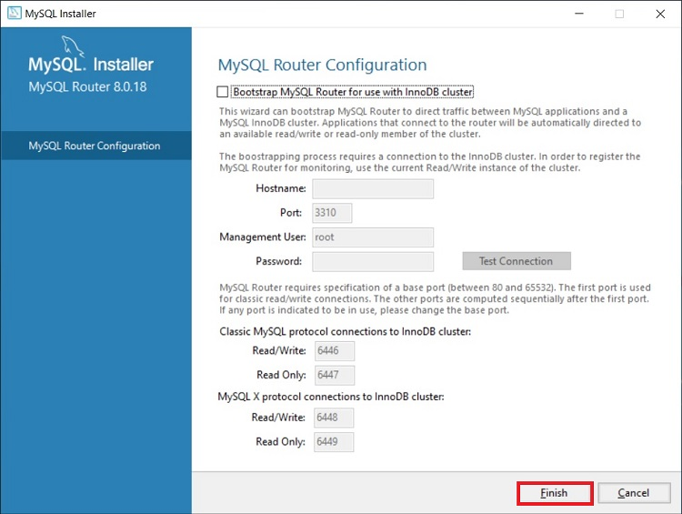
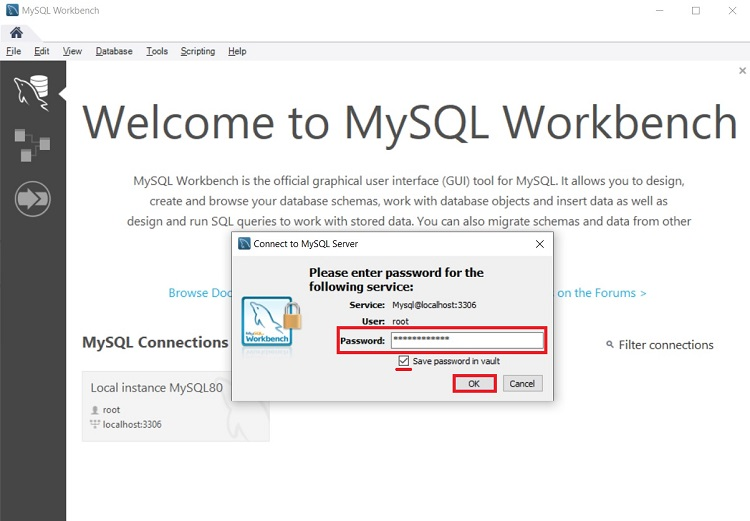

1.Технология установки и настройка сервера MySQL в операционной системе Windows.Клиентские настройки, протоколирование, безопасность
Установка и настройка MySQL 8 на Windows 10
Шаг 1 – Скачивание программы MySQL 8 для Windows 10
Чтобы перейти к установке MySQL 8, сначала необходимо скачать дистрибутив этой программы.
Скачать MySQL 8 в редакции Community можно, как было уже отмечено, абсолютно свободно с официального сайта, вот ссылка на страницу загрузки – https://dev.mysql.com/downloads/installer
После перехода на страницу Вы можете выбрать способ загрузки дистрибутива, нам предлагают два способа:
- Скачать Web-установщик – небольшая по размеру программа, которая загружает все необходимые компоненты для установки MySQL. Можно использовать для установки MySQL на компьютерах, где есть интернет;
- Скачать полный установщик – дистрибутив программы MySQL, который включает все необходимые компоненты. В данном случае Вы можете использовать этот дистрибутив для установки MySQL на компьютере как с доступом, так и без доступа к интернету. Например, Вы можете скачать этот файл на компьютере, где есть интернет, а использовать его для установки MySQL на другом компьютере, который без интернета.
Для примера давайте скачаем полный дистрибутив программы MySQL, для этого нажимаем «Download» напротив соответствующего пункта.
Потом нам предлагают авторизоваться, используя учетные данные Oracle, если они есть, или зарегистрироваться, тем самым создать учетную запись Oracle. Однако если Вы этого не хотите, то в нижней части есть ссылка «No thanks, just start my download», нажав на которую сразу начнется загрузка MySQL.
Нажимаем на эту ссылку и ждем окончания загрузки.
В результате у Вас должен загрузится файл mysql-installer-community-8.0.18.0.msi размером примерно 415 мегабайт.
Шаг 2 – Запуск установки и выбор типа установки MySQL
Далее запускаем скаченный файл, в итоге запустится программа установки MySQL. Сначала выбираем тип установки.
Нам предлагают несколько вариантов:
- Developer – это вариант по умолчанию, он предполагает установку всего того, что требуется разработчику, это и MySQL Server, и MySQL Workbench и другие инструменты для работы с MySQL;
- Server Only – этот вариант предполагает установку только сервера MySQL;
- Client Only – этот вариант предполагает установку только клиентской части для работы с MySQL Server, т.е. серверная часть устанавливаться не будет;
- Full – установка всех включённых в дистрибутив компонентов;
- Custom – выборочная установка, в данном случае Вы можете установить только то, что нужно Вам.
Вариант по умолчанию, т.е. Developer, подойдет для большинства случаев, особенно если Вы устанавливаете MySQL на домашнем компьютере для каких-то своих целей (изучение MySQL, изучение SQL и так далее).
Я оставляю этот вариант, нажимаем «Next».

Шаг 3 – Проверка и установка дополнительных компонентов
Затем программа установки проверит систему на наличие компонентов, которые требуются для работы некоторых расширений MySQL. В моем случае программа установки выдала два предупреждения для расширений MySQL For Excel и MySQL For Visual Studio. Если Вы планируете пользоваться этими компонентами, то Вам нужно устранить эти замечания. Для этого в свою очередь Вам необходимо установить эти компоненты (т.е. выделить их и нажать «Execute», некоторые могут установиться и автоматически).
Однако если Вы не будете использовать расширения MySQL For Excel и MySQL For Visual Studio, то можете сразу нажать «Next».

Программа установки выдаст предупреждение, связанное с отсутствием некоторых компонентов, жмем «Yes».
Шаг 4 – Установка компонентов MySQL
Все готово для установки MySQL, на данном шаге программа установки выдаст все компоненты MySQL, которые готовы к установке, нажимаем «Execute».
В результате начнется последовательная установка компонентов MySQL.
Шаг 5 – Завершение установки компонентов MySQL
Когда напротив каждого пункта появится зеленая галочка, установка будет завершена.
Нажимаем «Next».
Шаг 6 – Настройка компонентов MySQL
Все компоненты установлены, но не все настроены, поэтому нам необходимо их настроить. Программа установки покажет, какие конкретно компоненты требуется настроить. В нашем случае это MySQL Server, MySQL Router и Samples and Examples.
Нажимаем «Next».
Шаг 7 – Настройка MySQL Server (параметр High Availability)
Сначала нам обязательно необходимо настроить MySQL Server.
Первым делом настраиваем параметр «High Availability» (Высокая доступность), который отвечает за то, как будет установлен MySQL сервер. В нашем случае, как и в большинстве других, требуется стандартный «Standalone MySQL Server» (Автономный сервер) – это классический вариант установки MySQL Server.
Поэтому выбираем первый пункт и жмем «Next».

Шаг 8 – Настройка MySQL Server (Type and Networking)
Далее настраиваем тип сервера и сеть. В нашем случае можно оставить все по умолчанию:
Тип – Development Computer;
Протокол – TCP/IP;
Порт – 3306;
Галочку «Open Windows Firewall ports for network access» необходимо поставить.
В случае необходимости Вы можете более тонко настроить MySQL Server, использовав для этого расширенные параметры. Чтобы это сделать, поставьте галочку «Show Advanced and Logging Options».
Для продолжения жмем «Next».

Шаг 9 – Настройка метода аутентификации в MySQL Server
8 версия MySQL поддерживает новый метод аутентификации, который и рекомендовано использовать, оставляем как есть и нажимаем «Next».
В случае необходимости Вы можете выбрать второй пункт, который использовался в MySQL 5.
Шаг 10 – Настройка пользователей MySQL
После этого нам нужно придумать пароль для пользователя root (это главный администратор MySQL).
Кроме этого, мы можем добавить дополнительных пользователей, чтобы это сделать, необходимо нажать на кнопку «Add User».

И ввести необходимые данные:
- User Name – вводим имя пользователя;
- Host – оставляем «All Hosts»;
- Role – выбираем роль пользователя;
- Password и Confirm Password – придумываем и вводим пароль, который будет у этого пользователя.
Нажимаем «ОК».

После этого пользователь будет создан.
Нажимаем «Next» для продолжения.
Шаг 11 – Настройка службы MySQL в Windows
Теперь нам необходимо настроить службу MySQL, которая будет работать в Windows.
Мы можем задать:
- Windows Service Name – Имя службы;
- «Start the MySQL Server at System Startup» – если эта галочка стоит, то служба MySQL будет запускаться вместе с запуском Windows;
- Run Windows Service – от имени какой учетной записи будет работать служба MySQL в Windows. Standard System Account – это системная учетная запись.
Можно все оставить по умолчанию, я так и поступаю.
Нажимаем «Next».
Шаг 12 – Применение параметров MySQL Server
Все параметры MySQL Server настроены, однако нам еще нужно их применить и сохранить. Для этого на следующем окне нажимаем «Execute».
Шаг 13 – Завершение настройки MySQL Server
Когда все галочки будут проставлены и отобразится сообщение «Successful», процесс будет завершен, нажимаем «Finish».
Статус MySQL Server будет изменен на «Configuration complete».
Чтобы продолжить настройку, нажимаем «Next».
Шаг 14 – Настройка MySQL Router
В данном случае нам предлагают настроить маршрутизатор MySQL, однако это делать необязательно, можем сразу нажать «Finish».

Для того чтобы перейти к настройке следующего компонента, нажимаем «Next».

Шаг 15 – Установка тестовых данных на MySQL
Далее мы можем установить тестовые данные на MySQL Server, например, для обучения. Чтобы это сделать, вводим пароль пользователя Root и нажимаем «Check» для проверки, если подключение установлено, значит все хорошо и можно продолжать.
Нажимаем «Next».

Чтобы применить все параметры и начать извлечение тестовых данных на MySQL Server, нажимаем «Execute».
Процесс будет завершен, когда галочки будут проставлены и отобразится сообщение «Successful».
Нажимаем «Finish».
Шаг 16 – Завершение настройки компонентов MySQL
Все компоненты настроены. Нажимаем «Next».
Шаг 17 – Завершение всего процесса установки и настройки MySQL
MySQL Server и все необходимые для работы с ним компоненты установлены и настроены: это и MySQL Workbench, и различные коннекторы, и документация, и даже тестовая база данных.
Чтобы сразу же запустить MySQL Workbench после завершения установки, поставьте галочку «Start MySQL Workbench after Setup».
Нажимаем «Finish».
Запуск MySQL Workbench
После установки MySQL в меню Windows 10 появятся все необходимые ярлыки, которые Вы можете использовать. Например, для запуска среды «MySQL Workbench 8» можно использовать соответствующий ярлык.
Подключение к MySQL используя MySQL Workbench
Чтобы подключиться к серверу MySQL и посмотреть на объекты базы данных, на таблицы, представления и так далее, запустите MySQL Workbench, например, как указано выше. В результате откроется MySQL Workbench, где на стартовой странице у нас уже будет одно подключение к локальному серверу, которое будет осуществляться от имени пользователя root.
Нажимаем на него.
Затем вводим пароль, чтобы сохранить его и не вводить каждый раз при подключении мы можем поставить галочку «Save password in vault».
Нажимаем «ОК».

В итоге мы подключимся к серверу, и чтобы посмотреть на схему данных, нам в окне навигатора необходимо перейти на вкладку «Schemas».
Кроме того, мы можем скрыть ненужные окна, для этого можно использовать специальные значки в правой верхней части среды MySQL Workbench.
У нас отобразится схема данных, теперь мы можем посмотреть, какие объекты есть в БД и, например, учиться писать SQL запросы.
Для наглядности я скрыл боковое окно.
В данном примере мы послали запрос SELECT на выборку данных из таблицы address. Как видите, данные вернулись и все работает.